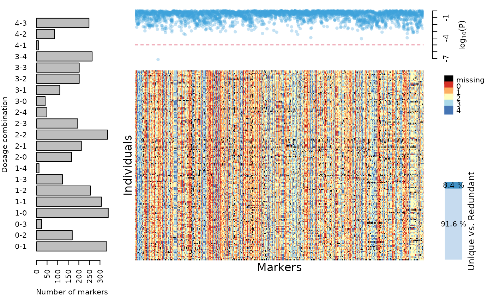

Reads an external data file. The format of the file is described in the Details
section. This function creates an object of class mappoly.data
a character string with the name of (or full path to) the input file which contains the data to be read
if TRUE (default) converts data points with unexpected
genotypes (i.e. no double reduction) to 'NA'. See function segreg_poly
for information on expected classes and their respective frequencies.
logical. If TRUE (default), removes redundant markers
during map construction, keeping them annotated to export to the final map.
if TRUE (default), the current progress is shown; if
FALSE, no output is produced
an object of class mappoly.data
if available, print the number of markers per sequence (default = FALSE)
currently ignored
position of a threshold line for p values of the segregation test (default = 10e-06)
An object of class mappoly.data which contains a
list with the following components:
ploidy level
number individuals
total number of markers
the names of the individuals
the names of the markers
a vector containing the dosage in
parent P for all n.mrk markers
a vector containing the dosage in
parent Q for all n.mrk markers
a vector indicating which sequence each marker belongs. Zero indicates that the marker was not assigned to any sequence
Physical position of the markers into the sequence
NULL (unused in this type of data)
NULL (unused in this type of data)
NULL (unused in this type of data)
a matrix containing the dosage for each markers (rows)
for each individual (columns). Missing data are represented by
ploidy_level + 1
number of phenotypic traits
a matrix containing the phenotypic data. The rows correspond to the traits and the columns correspond to the individuals
if elim.redundant = TRUE, holds all non-redundant markers
if elim.redundant = TRUE, holds all non-redundant markers and its equivalence to the redundant ones
The first line of the input file contains the string ploidy followed by the ploidy level of the parents.
The second and third lines contain the strings n.ind and n.mrk followed by the number of individuals in
the dataset and the total number of markers, respectively. Lines number 4 and 5 contain the strings
mrk.names and ind.names followed by a sequence of the names of the markers and the name of the individuals,
respectively. Lines 6 and 7 contain the strings dosageP and dosageQ followed by a sequence of numbers
containing the dosage of all markers in parent P and Q. Line 8, contains the string seq followed by
a sequence of integer numbers indicating the chromosome each marker belongs. It can be any 'a priori'
information regarding the physical distance between markers. For example, these numbers could refer
to chromosomes, scaffolds or even contigs, in which the markers are positioned. If this information
is not available for a particular marker, NA should be used. If this information is not available for
any of the markers, the string seq should be followed by a single NA. Line number 9 contains the string
seqpos followed by the physical position of the markers into the sequence. The physical position can be
given in any unity of physical genomic distance (base pairs, for instance). However, the user should be
able to make decisions based on these values, such as the occurrence of crossing overs, etc. Line number 10
should contain the string nphen followed by the number of phenotypic traits. Line number 11 is skipped
(Usually used as a spacer). The next elements are strings containing the name of the phenotypic trait with no space characters
followed by the phenotypic values. The number of lines should be the same number of phenotypic traits.
NA represents missing values. The line number 12 + nphen is skipped. Finally, the last element is a table
containing the dosage for each marker (rows) for each individual (columns). NA represents missing values.
Mollinari M., Olukolu B. A., Pereira G. da S., Khan A., Gemenet D., Yencho G. C., Zeng Z-B. (2020), Unraveling the Hexaploid Sweetpotato Inheritance Using Ultra-Dense Multilocus Mapping, _G3: Genes, Genomes, Genetics_. doi: 10.1534/g3.119.400620
Mollinari, M., and Garcia, A. A. F. (2019) Linkage analysis and haplotype phasing in experimental autopolyploid populations with high ploidy level using hidden Markov models, _G3: Genes, Genomes, Genetics_. doi: 10.1534/g3.119.400378
# \donttest{
#### Tetraploid Example
fl1 = "https://raw.githubusercontent.com/mmollina/MAPpoly_vignettes/master/data/SolCAP_dosage"
tempfl <- tempfile()
download.file(fl1, destfile = tempfl)
SolCAP.dose <- read_geno(file.in = tempfl)
#> Reading the following data:
#> Ploidy level: 4
#> No. individuals: 160
#> No. markers: 4017
#> No. informative markers: 4017 (100%)
#> ...
#>
#> Done with reading.
#> Filtering non-conforming markers.
#> ...
#> Performing chi-square test.
#> ...
#> Done.
print(SolCAP.dose, detailed = TRUE)
#> This is an object of class 'mappoly.data'
#> Ploidy level: 4
#> No. individuals: 160
#> No. markers: 3679
#> Missing data: 3.18%
#> Redundant markers: 8.41%
#>
#> ----------
#> No. markers per chromosome:
#> seq No.mrk
#> 1 391
#> 2 269
#> 3 290
#> 4 387
#> 5 275
#> 6 394
#> 7 345
#> 8 263
#> 9 282
#> 10 224
#> 11 252
#> 12 215
#> ----------
#> Markers with no chromosome information: 92
#> ----------
#> No. of markers per dosage combination in both parents:
#> P1 P2 freq
#> 0 1 332
#> 0 2 169
#> 0 3 24
#> 1 0 339
#> 1 1 307
#> 1 2 255
#> 1 3 123
#> 1 4 12
#> 2 0 166
#> 2 1 212
#> 2 2 336
#> 2 3 195
#> 2 4 49
#> 3 0 41
#> 3 1 110
#> 3 2 202
#> 3 3 202
#> 3 4 263
#> 4 1 9
#> 4 2 85
#> 4 3 248
plot(SolCAP.dose)

# }